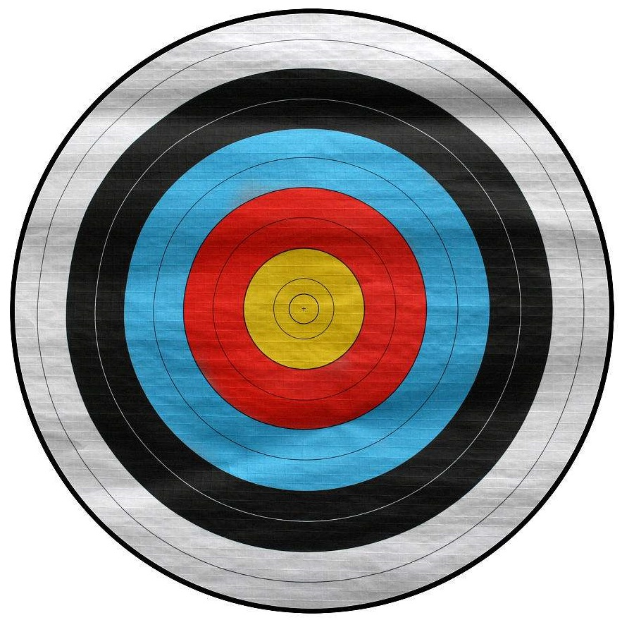

第 7 章 概率的定义
7.1 确定概率的频率方法
7.1.1 概率的统计定义
设事件\(A\)在\(n\)次试验中出现了\(r\)次，则比值 称为事件\(A\)在\(n\)次试验中出现的频率。
在同一组条件下所作的中，事件\(A\)出现的频率总是在区间\([0,1]\)上的一个确定的常数\(p\)附近摆动，并且稳定于\(p\)，则\(p\)称为事件\(A\)的概率，记作。
\(P(\)\()\)。如，\(P(\)骰子的点数\()=1/6\)是错误的。
7.2 确定概率的古典方法
7.2.1 古典概率
的随机试验要求满足下两条件：
有限性。只有有限多个不同的基本事件。
等可能性。每个基本事件出现的可能性相等。
在古典概型中，如果基本事件（样本点）的总数为\(n\)，事件\(A\)所包含的基本事件（样本点）个数为\(r(r\le n)\)，则定义事件\(A\)的概率\(P(A)\)为\(r/n\)。即 \[P(A)=\frac{r}{n}=\frac{\text{A中包含的基本事件的个数}}{\text{基本事件的总数}}\]
抛均匀的硬币、骰子
古典概型的取值范围？
7.2.2 例1：抽球类型
袋中有\(a\)个黄球，\(b\)个白球，从中接连任意取出\(k\)个球\((k\leq a+b)\)，且每次取出的球不再放回去，求第\(k\)次取出的球是黄球的概率？
- 基本事件？
- 是否是古典概型？有限性、等可能性？
考虑第1次到第\(k\)次的取球结果。 \[P(A)=\frac{C_a^1A_{a+b-1}^{k-1}}{A_{a+b}^{k}}=\frac{a}{a+b}\] 只考虑第\(k\)次的取球结果。 \[P(A)=\frac{C_a^1}{C_{a+b}^{1}}=\frac{a}{a+b}\] 抽签与顺序无关（如同有放回的情况）！基本事件是相对的！
7.2.3 例2：\(m\)个质点在\(n\)个格子中的分布问题
设有\(m\)个不同质点，每个质点都以概率\(1/n\)落入\(n\)个格子(\(n\ge m\))的每一个之中，求下列事件的概率：
A: 指定\(m\)个格子中各有一个质点；
B: 任意\(m\)个格子中各有一个质点；
C: 指定的一个格子中恰有\(k(k\le m)\)个质点。
\[\begin{aligned} P(A) &= \frac{m!}{n^m}\\ P(B) &= \frac{C_n^mm!}{n^m}=\frac{A_n^m}{n^m}\\ P(C) &= \frac{C_m^k(n-1)^{m-k}}{n^m} \end{aligned}\]
7.2.4 例3：同一天生日问题
某班级有\(n\)个人，问至少有两个人的生日在同一天的概率为多大？（假设一年有365天）
记\(A=\){\(n\)个人中至少有两个人的生日相同}。\(\bar{A}=\){\(n\)个人中的生日全不相同}, 易知
\[P(\bar{A})=\frac{A_{365}^n}{365^n}=\frac{365!}{365^n(365-n)!}.\] 因此， \[P(A)=1-P(\bar{A})=1-\frac{365!}{365^n(365-n)!}.\]
上述只是对\(n\le 365\)成立。如果\(n>365\)，则显然\(P(A)=1\).***联系生日攻击问题***
7.3 确定概率的几何方法
7.3.1 概率的几何定义
平面上有可测的区域\(G\)和\(g\)，向\(G\)中随机投掷一点\(M\)，设\(M\)必落在\(G\)内。如\(M\)落在\(g\)内的概率只与\(g\)的面积成正比，而与\(g\)的位置和形状无关。这样的随机实验，称为。点\(M\)落入\(G\)内的部分区域\(g\)的概率为： \[P = \frac{g\text{的面积}}{G\text{的面积}}\]
随机投点是指\(M\)落入\(G\)内任一处均是等可能的。
几何概型的取值范围？
7.3.2 例1：会面问题
已知甲乙两船将在同一天的0点到24点之间随机地到达码头，该码头只有一个泊位。若甲先到达，需停靠6小时后才离开码头。若乙先到达，则要停靠8小时后才离开码头。问这两船中有船需等候泊位空出的概率?
设甲船到达码头的时刻是\(x\)，乙船到达码头的时刻是\(y\)，显然\(0\le x,y\le 24\)。若这两船中有船需等候泊位空出，则\(y-x< 6\)且\(x-y< 8\).
0.5
0.5 \[\begin{aligned} P(A) &= \frac{24^2-(16^2+18^2)/2}{24^2}\\&\approx 0.4965 \end{aligned}\]
7.3.3 例2：蒲丰投针实验
0.6 是几何概率的开创者，并以蒲丰投针问题闻名于世，发表在其1777年的论著《或然性算术试验》中。
由于通过他的投针试验法可以利用很多次随机投针试验算出\(\pi\)的近似值，所以特别引人瞩目，这也是最早的几何概 率问题。并且蒲丰本人对这个实验给予证明。
1850年，瑞士数学家在苏黎世，用一根长\(36mm\)的针，平行线间距为\(45mm\)，投掷 \(5000\) 次，得\(\pi\approx3.1596\)。1864年，英国人投掷了\(1100\)次，求得\(\pi\approx3.1419\)。1901年，意大利人投掷了\(3408\)次，得到了准确到6位小数的\(\pi\)值。
0.4

George-Louis Leclerc de Buffon (1707.9.7-1788.4.16)，法国数学家、自然科学家。
7.3.4 例2：蒲丰投针实验
平面上画着一些平行线，它们之间的距离等于\(a\),向此平面任投长度为\(\ell(\ell<a)\) 的针，试求此针与任一平行线相交的概率。
设\(x\)表示针的中点到最近的一条平行线的距离，\(\theta\)表示针与平行线的交角。显然\(0\le x\le a/2\), \(0\le \theta\le \pi\). 为使针与平行线相交，必须\(x\le \frac{\ell}{2}\sin\theta\).
0.3
0.3
0.4 所求的概率为： \[\begin{aligned} P &= \frac{\frac \ell 2\int_0^\pi\sin\theta\mrd\theta }{\frac 1 2\pi a}=\frac{2\ell}{\pi a}. \end{aligned}\] 若取\(\ell = a/2\)，则
7.4 确定概率的主观方法
7.4.1 主观概率
统计界的贝叶斯学派认为：。
天气预报说“明天下雨的概率为90%”
医生说“手术成功可能性为90%”
我说“考试及格的可能性为99%”
注意区别“主观概率”与“主观臆造”。
7.5 概率的公理化定义
7.5.1 概率的公理化定义
前面学了三种概率定义，各有其局限性。
要求作大量重复试验。
试验结果要求有限、互不相容、等可能。
落入区域G内任一点是等可能的。
image
如何刻画更一般的情况？1900年数学家提出要建立概率的公理化定义来解决这个问题，即。1933年苏联数学家首次提出了概率的公理化定义，这个定义既概括了历史上几种概率的共同特征，又避免了各自的局限性和含混之处，不管什么随机现象，只要满足该定义的三条公理，才能说它是概率。
7.5.2 概率的公理化定义
样本空间\(\Omega\)，事件域\(\mf\)，概率测度\(P:\mf\to [0,1]\)。由三元组定义一个概率空间。
是由样本空间的一些子集构成的集合，并满足以下条件：
\(\Omega\in \mf\);
如果\(A\in\mf\), 则\(\bar{A}\in \mf\);
如果\(A_n\in\mf\), \(n=1,\dots,\infty\), 则\(\bigcup_{n=1}^\infty A_n\in \mf\).
试证明：\(\varnothing \in \mf\). 如果\(A_n\in\mf\), \(\bigcap_{n=1}^\infty A_n\in \mf\).
7.5.3 概率的公理化定义
样本空间\(\Omega\)，事件域\(\mf\)，概率测度\(P:\mf\to [0,1]\)。由三元组定义一个概率空间。
度量事件\(A\in \mf\)发生的概率，满足下面三个公理。
\(\forall A\in \mf\), \(0\le P(A)\);
\(P(\Omega)=1\);
对可列个两两互斥的事件\(A_1,A_2,\dots,A_n,\dots\)有， \[P\left(\bigcup_{i=1}^\infty A_i\right)=\sum_{i=1}^{\infty}P(A_i).\]
：古典概率和几何概率是否符合该公理化定义？
7.5.4 概率的性质
\(P(\varnothing)=0\)
如果\(A,B\)互斥，则\(P(A+B)=P(A)+P(B)\).
如果\(A\subset B\),则\(P(A)\le P(B)\).
\(P(\bar{A})=1-P(A)\)
\(P(A\backslash B)=P(A)-P(AB)\)
\(P(A\cup B)=P(A)+P(B)-P(AB)\)
如果\(A_1\supset A_2\supset \cdots\supset A_n\cdots\)，则 \[P\left(\bigcap_{i=1}^\infty A_i\right)=\lim_{i\to\infty}P(A_i).\]
如果\(A_1\subset A_2\subset \cdots\subset A_n\cdots\)，则 \[P\left(\bigcup_{i=1}^\infty A_i\right)=\lim_{i\to\infty}P(A_i).\]
7.5.5 推论一
： 对任意两个事件\(A\), \(B\), 有 \[P(A\cup B)\le P(A)+P(B).\] 对任意\(n\)个事件\(A_1,A_2,\dots,A_n\), 有 \[P(\cup_{i=1}^nA_i)\le \sum_{i=1}^{n}P(A_i).\]
7.5.6 推论二
证明下列命题：
若\(A_1\)与\(A_2\)同时发生时\(A\)发生，则有\(P(A)\ge P(A_1)+P(A_2)-1\).
因为\(A_1A_2\subset A\)，则\(P(A)\ge P(A_1A_2)\). 又 \[\begin{aligned} P(A_1A_2)&=P(A_1)+P(A_2)-P(A_1\cup A_2)\notag\\&\ge P(A_1)+P(A_2)-1.\label{eq:1} \end{aligned}\]
若\(A_1A_2A_3\subset A\)，则有\(P(A)\ge P(A_1)+P(A_2)+P(A_3)-2\).
由第一题结论得到\(P(A)\ge P(A_1A_2)+P(A_3)-1\). 再由\[eq:1\]可得所需结果。
若\(\bigcap_{i=1}^nA_i\subset A\)，则\(P(A)\ge\sum_{i=1}^nP(A_i)-n+1\).
7.5.7 第一次作业
第一章习题：1.3, 1.4, 1.6, 1.12, 1.15, 1.18